データの可視化
(Press ? for help, n and p for next and previous slide)
可視化の重要性
可視化のための機能
- データの特徴や傾向を把握するために効果的
- Rはきわめて多彩な作図機能を持つ
package::graphicsに含まれる代表的な描画関数を取り上げて解説する- 描画関連の関数は色， 線の種類や太さ， あるいは図中の文字の大きさなどを指定することができる
- 用意されている多彩なオプションは説明しきれないため，
必要に応じて関数
help()(ヘルプ)と と関数example()(例題) を参照のこと
(参考) 図の保存
- RStudioの機能を使う場合:
- 右下ペインの“Plots”タブの“Export”をクリック
- 形式やサイズを指定する
(クリップボードにコピーもできる)
コンソール / R Scriptで実行する場合:
help(pdf): PDFファイルに保存help(png): PNGファイルに保存help(dev.copy): “graphic device” 間でコピー
などを参照
基本的な描画
関数 plot()
ベクトルデータの描画を行う
基本書式
plot(x, y=NULL, type="p", xlim=NULL, ylim=NULL, main=NULL, xlab=NULL, ylab=NULL, ...) # ...はその他のオプション- 関数の引数
x,y: ベクトル．yは省略可能．type: 描画タイプ．既定値はp(点)．l(折れ線)など指定可xlim/ylim: \(x/y\) 軸の範囲．既定値は自動的に決定main: 図のタイトル．既定値は空白xlab: \(x\) 軸のラベル名．既定値はIndexylab: \(y\) 軸のラベル名．既定値はxのオブジェクト名
関数 plot() のオプション
- よく利用されるその他のオプション (
...の部分)col: 色の指定．"red"や"blue"など．
(指定可能な色は関数colors()で照会できる)pch: 点の形． 詳細はhelp(points)を参照lty: 線のタイプ． 実線・破線など．タイプ名もしくは数字で指定． 詳細はhelp(par)を参照lwd: 線の太さ．数字で指定cex: 文字の大きさ． 既定値の何倍にするかを指定
ベクトルの描画の例 (1/3)
## plot(x) の場合
x <- pi/6*(0:12) # 30度(pi/6)おきに1周期分 (0-2*pi)
plot(sin(x)) # x軸はベクトルの要素番号(Index)，y軸はsin(x)の値を描画
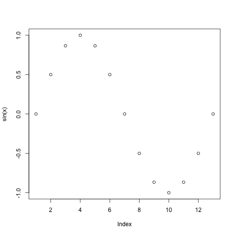
ベクトルの描画の例 (2/3)
## plot(x,y) の場合
x <- pi/6*(0:12)
plot(x, sin(x)) # x の値に対する y=sin(x) の値を対応づけて描画
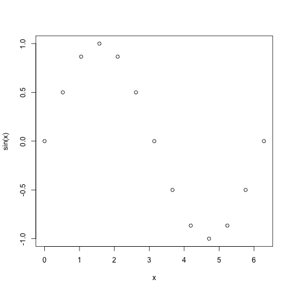
ベクトルの描画の例 (3/3)
## オプションを追加
x <- pi/6*(0:12)
plot(x,sin(x),type="l",lwd=3,col="blue",ylab="y=sin(x)")

重ね描き
別のベクトルを点として重ね描きする場合
points(x, y=NULL, ...) # plotと同様なオプションが指定可別のベクトルを線として重ね描きする場合
lines(x, y=NULL, ...) # plotと同様なオプションが指定可文字を重ね描きする場合
text(x, y=NULL, labels, ...) # labelsに文字列を指定
重ね描きの例
## ベクトルデータの重ね描き
x <- seq(0, 4*pi, by=0.5)
y <- sin(x)
z <- cos(x)
plot(x, y, type="b", pch="x", ylim=c(-2,2), col="red") # "b"="p+l"
points(x, z, col="blue", pch="C") # 点を追加. pchは文字も指定できる
lines(x, z, col="cyan", lwd=3) # 折れ線を追加
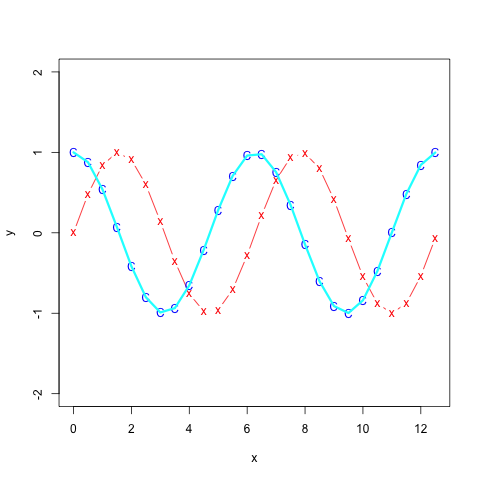
Figure 4: ベクトルデータの重ね描き
関数 curve()
1変数関数の描画を行う
基本書式
curve(expr, from=NULL, to=NULL, add=FALSE, type="l", xname="x", xlab=xname, ylab=NULL, ...) ## plot(x, y=0, to=1, ...) でもほぼ同じ- 関数の引数
expr: 1変数関数 (関数名)from: \(x\) 軸の左端to: \(x\) 軸の右端add: TRUE で重ね描きするxname: \(x\) 軸の変数名
関数の描画の例 (1/2)
## 関数の描画
curve(sin, from=0, to=4*pi,
col="blue", lwd=2, # グラフの線の色と太さ
xlab="time", ylab="sin/cos") # x/y軸のラベルの文字列を指定
curve(cos,
add=TRUE, # グラフを上書き
col="red", lwd=2)
Figure 5: 関数の描画
関数の描画の例 (2/2)
## 関数とベクトルデータの重ね描き
x <- seq(0, 4*pi, by=0.25)
y <- sin(x) + rep(c(-0.2, 0.1), len=length(x))
plot(x, y, type="p", pch="x", ylim=c(-2,2), col="red")
lines(x, y, col="blue", lwd=2) # 折れ線を追加
curve(sin, add=TRUE, col="orange", lwd=3)
Figure 6: 関数とベクトルデータの重ね描き
散布図
- 2種類のデータ \(x_1,\dots,x_N\) および \(y_1,\dots,y_N\) が与えられたとき， 同じ index を持つ点 \((x_1,y_1),\dotsc,(x_N,y_N)\) を 平面上に描画した図
関数 plot()
ベクトルデータの散布図を作成する
基本書式 (既出の機能)
plot(x, y=NULL, ...)x: 1種類目のデータ \(x_1,\dots,x_N\)y: 2種類目のデータ \(y_1,\dots,y_N\)...: “ベクトルの描画”と同じオプションが利用可能
関数 plot()
データフレーム x の変数A，Bの散布図を作成する
基本書式
plot(B ~ A, data=x, ...)x: データフレームA,B: 変数名 (データフレームの列名)
- データフレーム
xに対してplot(x)を実行すると， すべての変数のペアに対する散布図が 作成される(散布図行列;pairs()後述)
散布図の例
## データフレームを用いた散布図
plot(Ozone ~ Wind, data=airquality,
pch="*", col="red", cex=2) # cexは点の大きさの倍率を指定
(参考) 日本語に関する注意
日本語を含む図で文字化けが起こった場合
(主にMacOS)
関数
parのfamilyオプションでフォントを指定
ヒラギノ角ゴシックW4を指定する場合par(family="HiraginoSans-W4") # 数字を変えると太さが変わる- 以下のサイトなども参考になる
https://oku.edu.mie-u.ac.jp/~okumura/stat/font.html
演習
練習問題
jpdata1/3.csv(前回配布のデータ)を用いて以下の問に答えよ．- 婚姻・離婚率の散布図を描け．
- 地方別に異なる点の形状を用いた散布図を描け．
- それ以外にも様々な散布図を描画してみよう．
(参考) 読み込み方:
## CSVファイルは作業ディレクトリの下の data サブディレクトリにあるとする myData <- read.csv(file="data/jpdata1.csv",fileEncoding="utf8",row.names=1) myArea <- read.csv(file="data/jpdata3.csv",fileEncoding="utf8")
分布の視覚化
ヒストグラム
- データの値の範囲をいくつかの区間に分割し， 各区間に含まれるデータ数を棒グラフにしたもの
- 棒グラフの横幅が区間に対応し, 面積が区間に含まれるデータの個数に比例するグラフを作成する
- データの分布の仕方(どのあたりに値が集中しているか, どの程度値にばらつきがあるかなど)を可視化するのに有効
関数 hist()
基本書式
hist(x, breaks="Sturges", freq, ...) # plotと同様なオプションが指定可x: ベクトルbreaks: 区間の分割の仕方を指定． 数字を指定するとデータ範囲をその数字に近い個数に等分割する． 既定値はSturgesの公式． 詳細はヘルプを参照freq:TRUE(既定値)を指定すると縦軸はデータ数，FALSEを指定すると縦軸はデータ数/全データ数．
ヒストグラムの例 (1/2)
## 関数histによるヒストグラムの作図
myData <- read.csv("data/tokyo_weather.csv", fileEncoding="utf8")
par(family="HiraginoSans-W4") # 日本語表示
hist(myData$気温,
xlab="", ylab="頻度",
breaks=25, # ビンの数を約25に設定
labels=TRUE, # 各ビンの度数を表示
col="green", main="気温のヒストグラム")
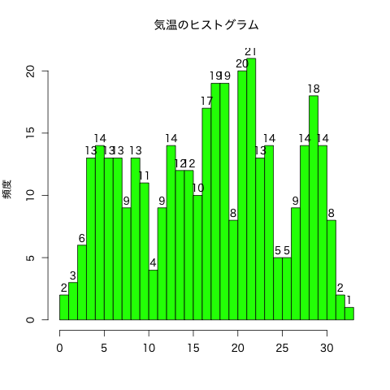
Figure 8: ヒストグラム
ヒストグラムの例 (2/2)
## 関数histによるヒストグラムの作図(密度での表示)
par(family="HiraginoSans-W4") # 日本語表示
hist(myData$風速, freq=FALSE, # 全体に対する割合で表示
xlab="", ylab="密度", breaks=25,
col="lightblue", border="blue", # 長方形の境界の色
main="風速の密度")
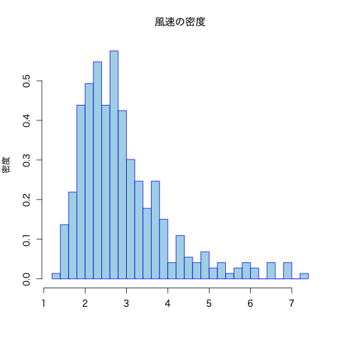
箱ひげ図
- データの中心，散らばり具合および外れ値を考察するための図 (ヒストグラムの簡易版)
- 複数のデータの分布の比較の際に有効
- 太線で表示された中央値(第2四分位点)
- 第1四分位点を下端・第3四分位点を上端とする長方形(箱)
- 第1四分位点・第3四分位点からそれぞれ箱の長さの1.5倍以内にあるデータのうちの 最小の値・最大の値を下端・上端とする直線(ひげ)
- ひげの外側のデータは点で表示される
関数 boxplot()
箱ひげ図を描画する
基本書式
boxplot(x, ...) # plotと同様なオプションが指定可x: ベクトルまたはデータフレーム- ベクトルに対しては単一の箱ひげ図
- データフレーム対しては列ごとの箱ひげ図
データフレーム
xの 変数Bを変数A(質的変数; 性別・植物の種類など)で分類する場合boxplot(B ~ A, data=x, ...)
箱ひげ図の例 (1/2)
## 関数boxplotによる箱ひげ図の作図
myData <- read.csv("data/tokyo_weather.csv", fileEncoding="utf8")
## 基本的な箱ひげ図
par(family="HiraginoSans-W4") # 日本語表示
boxplot(subset(myData, select=気温:風速)) # 数値データの一部を抽出
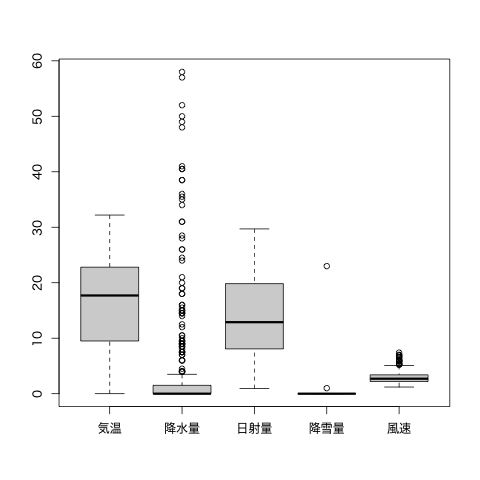
Figure 10: 箱ひげ図
箱ひげ図の例 (2/2)
## 関数boxplotによる箱ひげ図の作図
myData <- read.csv("data/tokyo_weather.csv", fileEncoding="utf8")
## 月ごとに気温を分類
par(family="HiraginoSans-W4") # 日本語表示
boxplot(気温 ~ 月, data=myData, col="orange", main="月ごとの気温")
## 図を回転する場合は horizontal を指定する
## boxplot(気温 ~ 月, data=myData,
## col="purple", main="月ごとの気温", horizontal=TRUE)
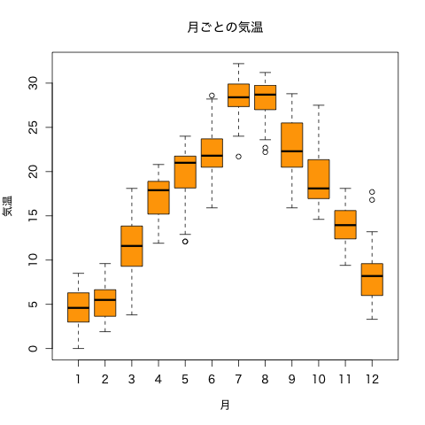
Figure 11: 箱ひげ図
比率の視覚化
関数 barplot()
棒グラフを作成する
基本書式
barplot(x,width=1,space=NULL,beside=FALSE, legend.text=NULL,args.legend=NULL, ...) # ...はplotと同様x: ベクトルまたは行列 (データフレームは不可)width: 棒の幅space: 棒グラフ間・変数間のスペースlegend.text: 凡例beside: 複数の変数を縦に並べるか・横に並べるかargs.legend: 関数legendに渡す引数
棒グラフの例 (1/2)
## 関数barplotによる棒グラフの作図
myData <- read.csv("data/tokyo_weather.csv", fileEncoding="utf8")
## 月ごとに各変数の平均を計算
par(family="HiraginoSans-W4") # 日本語表示
x <- aggregate(. ~ 月, FUN=mean,
data=subset(myData, select=c(月,気温:風速)))
## 基本的な棒グラフ
barplot(x[,2], # 棒の高さのベクトル
col="slateblue", # 棒の色の指定
names.arg=x[,1], # x軸のラベル
main=names(x)[2]) # タイトル
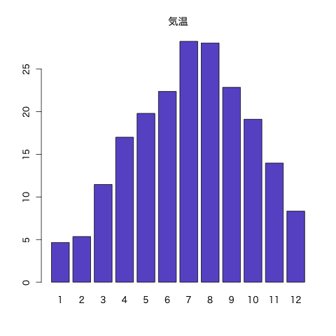
Figure 12: 棒グラフ
棒グラフの例 (2/2)
## 関数barplotによる棒グラフの作図
## 複数の棒グラフ
par(family="HiraginoSans-W4") # 日本語表示
barplot(as.matrix(x[ ,-1]), # 第1引数のデータフレームは行列にする
col=rainbow(12)[c(8:1,12:9)], # 12色に色分け
beside=TRUE, # 棒グラフを横に並べる
space=c(1.5, 3), # 棒グラフ間・変数間のスペースを指定
legend.text=paste0(x[ ,1], "月"), # 凡例の指定
args.legend=list(ncol=2)) # 凡例を2列にして表示
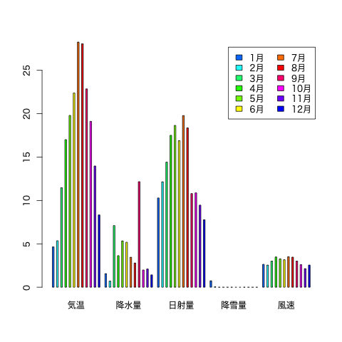
関数 pie()
円グラフを作成する
基本書式
pie(x, clockwise=FALSE, ...) # plotと同様なオプションが指定可x: ベクトルclockwise: 時計回りに書くか否か
円グラフの例
## 関数pieによる円グラフの作図
myData <- read.csv("data/tokyo_weather.csv", fileEncoding="utf8")
z <- hist(myData$日射量, breaks=5, plot=FALSE) # 5つ程度に分類
x <- z$count
y <- z$breaks
names(x) <- paste(y[-length(y)], y[-1], sep="-")
## 向きと色を調整
par(family="HiraginoSans-W4") # 日本語表示
pie(x, clockwise=TRUE, main="日射量別の日数の割合",
col=heat.colors(length(x),rev=TRUE))
演習
練習問題
covid19_tokyo.csv(東京都の新型コロナウイルス感染動向データ) を用いて以下の問に答えよ．- 陽性患者数の推移の折線グラフを描け．
- 検査実施人数の推移の棒グラフを描け．
- 曜日ごとの検査実施件数の箱ひげ図を描け．
(参考) 読み込み方:
## CSVファイルは作業ディレクトリの下の data サブディレクトリにあるとする myData <- read.csv(file="data/covid19_tokyo.csv",fileEncoding="utf8")- (参考) covid19データは東京都 (https://stopcovid19.metro.tokyo.lg.jp/) から取得して整理したもの
多次元データの視覚化
関数 pairs()
散布図行列を作成する
基本書式
pairs(x, ...) # plot() でも良い(すべての列のペアに対する散布図を行列状に配置)
x: データフレーム
変数
A1, \(\dots\),Ak(列名)のみ考える場合pairs(~ A1 + ... + Ak, data=x, ...) # plot() でも良い
散布図行列の例
## 関数pairsによる散布図の作図
myData <- read.csv("data/tokyo_weather.csv", fileEncoding="utf8")
## 表示する項目を指定
par(family = "HiraginoSans-W4")
pairs(~ 気温 + 日射量 + 風速, data=myData,
col=rainbow(12)[myData$月]) # 月毎に異なる色で表示
Figure 15: 散布図行列
関数 persp()
3次元のグラフを2次元に射影した俯瞰図を描く
基本書式
persp(x, y, z, theta=0, phi=15, expand=1, ...) # ...はplotと同様x,y,z: \(x,y,z\) 座標
(zは 点(x[i],y[j])に対応する値を \((i,j)\) 成分とする行列で与える必要がある)theta,phi: 俯瞰の方向を指定する極座標expand: \(z\) 軸の拡大度
3次元俯瞰図の例
## 関数perspによる2変数関数の俯瞰図
f <- function(x,y) x^2 - y^2
x <- seq(-3, 3, length=51) # x座標の定義域の分割
y <- seq(-3, 3, length=51) # y座標の定義域の分割
z <- outer(x, y, f) # z座標の計算
## 基本的な俯瞰図
## persp(x, y, z, col="lightblue")
## 俯瞰する向きを指定
persp(x, y, z, theta=30, phi=30, expand=0.5, # 俯瞰する視線の設定
col="royalblue", main=expression(z==x^2-y^2))
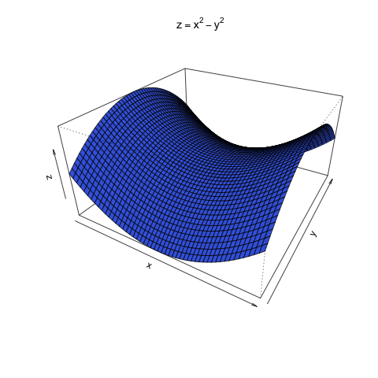
3次元グラフのためのパッケージ
以下は scatterplot3d() の例
基本書式
scatterplot3d(x, color, angle=40, ...) # ...はplotとは若干異なるx: \(x,y,z\) 座標を指定するデータフレーム
(関数persp()のように直接指定することも可能)color: 色を指定(colではない). 既定値は黒angle: \(x\) 軸と \(y\) 軸の間の角度
3次元散布図の例
## 3次元散布図
## install.packages("scatterplot3d") # 初めて使う時に必要
library(scatterplot3d) # パッケージのロード
myData <- read.csv("data/tokyo_weather.csv", fileEncoding="utf8")
par(family = "HiraginoSans-W4")
scatterplot3d(subset(myData, select=c(風速, 日射量, 気温)),
pch=4, color="orchid")
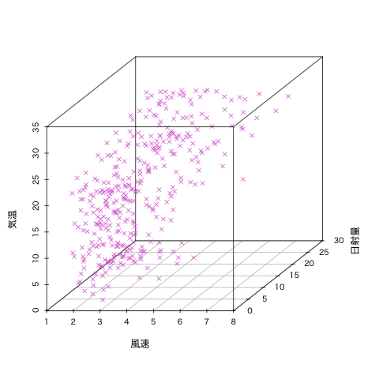
Figure 17: 3次元散布図
凡例の追加
関数 legend()
グラフに凡例を追加する
基本書式
legend(x, y=NULL, legend, ...) # ...はその他のオプションx,y: 凡例の位置を指定 (座標やキーワードで指定が可能)legend: 凡例の文字列ベクトル
- 複雑なオプションは
help(legend)を参照 - 数式の表示の詳細は
help(plotmath)を参照
凡例の例 (1/2)
## 凡例の追加
f <- function(x) exp(-x) * cos(x)
plot(f, 0, 2*pi, col="red", lwd=2, ylab="")
g <- function(x) exp(-x) * sin(x)
curve(g, lty=2, # グラフの線の形式 2は破線
add=TRUE, col="blue", lwd=2)
legend(4, # 凡例の左上のx座標
1, # 凡例の左上のy座標
legend=c(expression(e^{-x}*cos(x)),expression(e^{-x}*sin(x))),
lty=c(1,2), lwd=2, col=c("red","blue"), # 指定はグラフに準拠
bty="n", # 凡例の枠線の形式(オプション) "n"は枠線なし
y.intersp=2) # 行間の指定(オプション)
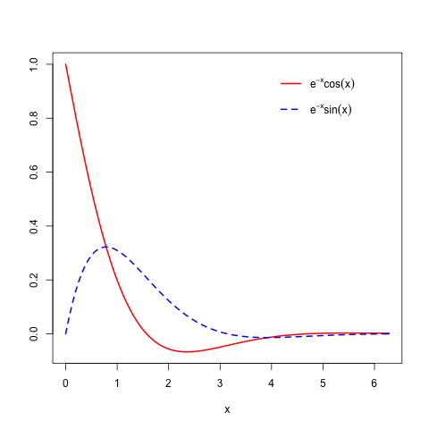
Figure 18: 凡例の追加
凡例の例 (2/2)
## 日本語フォントの指定
par(family="HiraginoSans-W4")
## 東京の気候データから月ごとの気温,降水量,日射量の平均を計算し描画する
myData <- read.csv("data/tokyo_weather.csv", fileEncoding="utf8")
(x <- aggregate(. ~ 月, FUN=mean,
data=subset(myData, select=c(月,気温,降水量,日射量))))
plot(x$気温, type ="b", lwd=3, col="green", ylim=c(0, max(x$気温)+1),
xlab="月", ylab="", main="東京の気候データ", axes=FALSE) # 軸は無
axis(1, 1:12, 1:12); axis(2) # x(1),y(2)軸の作成
lines(x$降水量, type="h", lwd=3, col="blue") # 棒グラフ
lines(x$日射量, type="s", lwd=3, lty=2, col="red") # 階段グラフ
abline(0, 0, lwd=2, lty="dotted") # y=0の線を引く
legend("topleft", inset=0.02, # 左上で全体の2%(0.02)内側に良せる
legend=c("気温","降水量","日射量"),
col=c("green","blue","red"), lwd=3, lty=c(1,1,2))
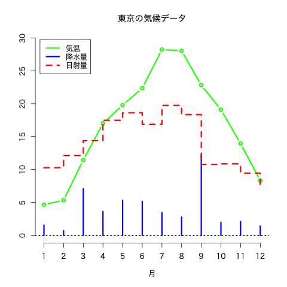
Figure 19: 日本語フォントの指定
補遺
関数 par()
グラフィクス環境の設定(複数図の配置, 余白の設定)をする
基本書式
par(tag=value)tag: グラフィックスパラメータ
- 描画の際の線の種類や色, 点の形等の既定値を設定することができる
- 設定可能なグラフィックスパラメータは
help(par)を参照
package::ggplot2
- Rのグラフィック機能を拡張するパッケージの1つ
- 統一的な文法で系統的に美しいグラフを描くことを目指して開発
- 詳細については https://docs.ggplot2.org/ を参照
演習
練習問題
配布したデータ
jpdata1.csvtokyo_weather.csvcovid19_tokyo.csvcovid19_tokyo_patients.csv
を用いて以下の問いに答えよ．
- 3次元の散布図を作成せよ．
- 凡例を加えたグラフを作成せよ．